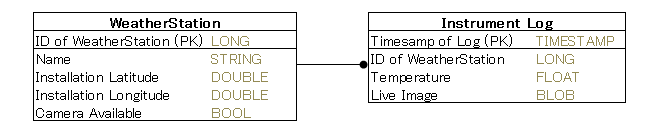

Table of Contents
5.1.1 Introduction¶
Overview¶
This document introduces the basic programming using GridDB Java APIs. For more information about the GridDB API, please refer to the GridDB API Reference.
About the Sample application¶
The sample application is a Weather Record Storage System, the contents of the “delivery system of weather observation data” are as follows.
Weather Record Storage System¶
The weather data that the measuring instrument observes is written at regular intervals to the measurement log.
The system has the following data fields:
- Measuring Instrument
- Data held
- Measuring Instrument ID
- To be used as the row key.
- Name
- The geographic name of where the Measuring Instrument is installed.
- Latitude
- Latitude of the Measuring Instrument.
- Longitude
- Longitude of the Measuring Instrument.
- Camera Available
- Boolean value for if a camera feed is available at that location.
- Measuring Instrument ID
- Data held
- Measurement Log
- Records measuring instrument data.
- Data held
- Timestamp
- To be used as the row key.
- Measuring instrument ID
- ID of instrument which records a log
- Temperature
- Measured temperature.
- Live image
- Image data.
- Timestamp
- Data held
- Records measuring instrument data.
The data schema used in the sample application is shown below.
Figure 1 Schema Definition
※ PK indicates a Primary Key.